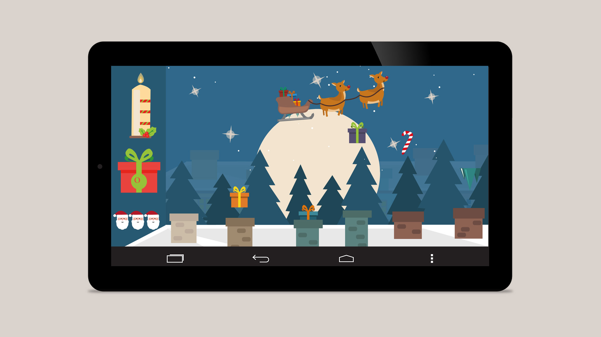

Tema 4
04.05.01 Individuelt spil
I dette tema, blev vi introduceret for nogle nye begreber og metoder, til at løse den endelige opgave; at skabe, designe og producere vores eget minispil.
Min proces i dette tema, forløb sig ved at vi gennemgik følgende:
- Opsætning af papirprototype efter idegenerering
- Viden om formgivning af figurer og dimensioner af disse
- Opsætning af moodboard og skitser
- Plantegning for aktivitetsdiagram

Processen
I processen, lærte jeg om placeringen af div-elementer i hhv. i en container og sprite, for at kunne placere spillets elementer. Jeg brugte CSS til at positionere mine elementer i position: relative og absolute. her!
Vi lærte under forløbet at benytte @keyframes, til vores animationer, og blev så småt introduceret til JavaScript, hvor vi her lærte at benytte bl.a. eventlisenters, variabler og ”this” i funktioner.
Det hele blev organiseret ved et State Machine Diagram, for at få overblik over scriptets funktioner, om hvornår disse skulle kaldes. Dette hjalp mig meget i min kodningsproces.
Ved temaets ende, skulle vi optage lydeffekter til spillet. Disse lærte vi at bearbejde disse, som .mp3-filer, og lærte at fjerne støj og redigere disse i Adobe Audition. Jeg benyttede et keyboard, som jeg havde stående hjemme, til at spille en masse forskellige lyde.
Med lyde, kodning og designet implementeret, stod spillet klar. Da spillet stod klar, benyttede vi fernisering af spillet, hvor spillet fik positiv respons. Jeg ændrede små ting ved spillet, herunder tilføjede jeg en animation over spillereglerne, for at gøre disse mere iøjnefaldende for brugeren.
Det endelige resultat kan ses